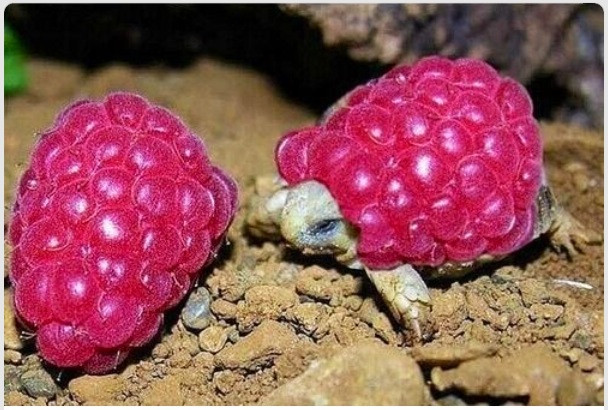

This page is for you if you like:
turtles
Now let's start with the basics. Look at the rare wild Rasp turtle. Incredibly squishy, they can grow up to lengths of 1 raspberry. Then they must shed their shell and fine a new, stronger, more durable shell for adulthood.
The Rasp turtle normally doesn't travel in groups as their bright coloring attracts predators, but sometimes, under the cover of night they will gather and engage in social activities with others of their kind.
Depending on the environment, Rasp turtles can live for up to 40 years!! Typically a peaceful animal, it will only attack if it feels threatned. They are a perfect starting pet as they are hard to lose track of and don't require extensive care.